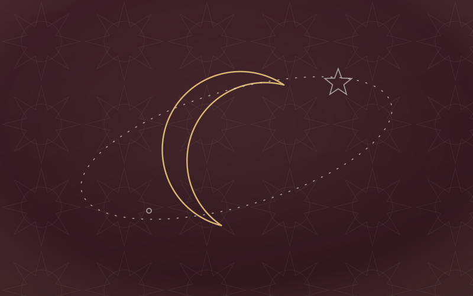
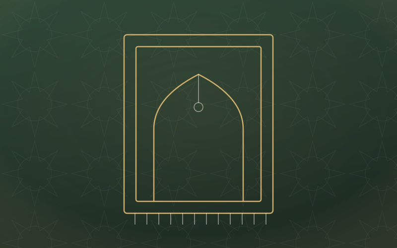
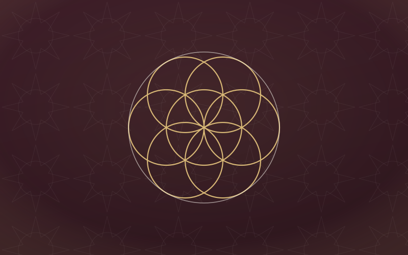
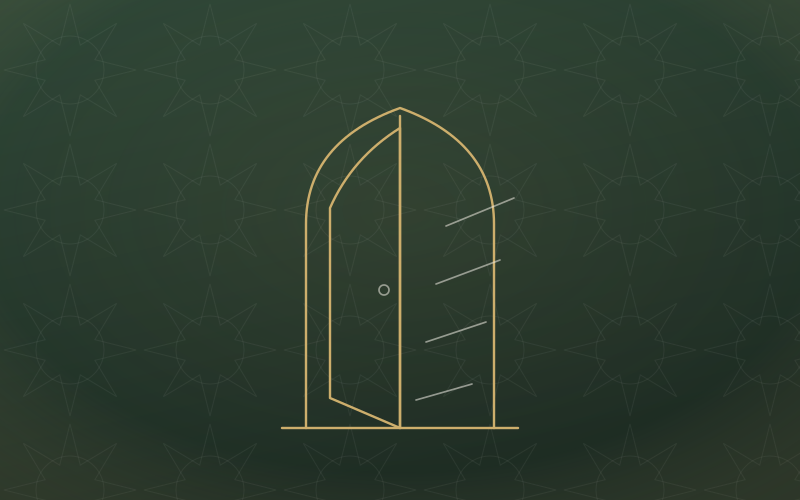
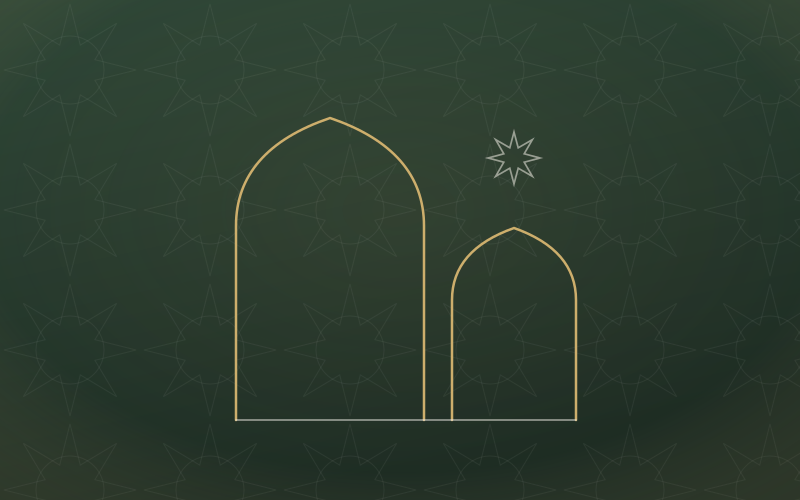
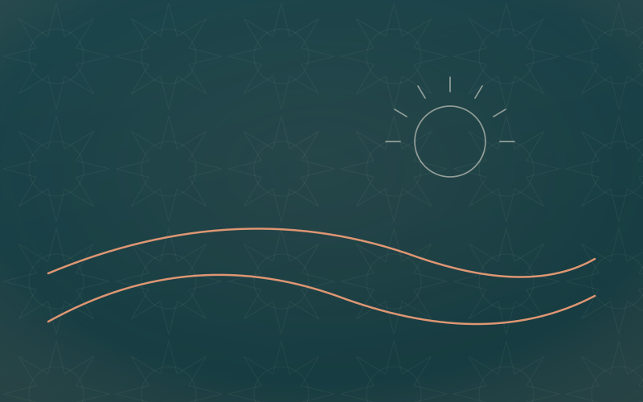

Learn at your pace
Resources for every seeker
Listen, watch, read, and download — beneficial knowledge organised into clear series, from your first steps to deeper study.
Listen, watch, read, and download — beneficial knowledge organised into clear series, from your first steps to deeper study.
Every lesson belongs to a structured path, so you always know where you are and what comes next.
No background assumed — the first level walks you gently through belief, purification, and prayer.
Knowing Allah, the pillars of īmān and Islam, and the purpose of it all — the ground everything else stands on.
Start this path →The fiqh of daily life taught practically — purification, prayer, fasting, and zakāh, step by step.
Start this path →Tafsīr and recitation — moving from understanding the words to living beneath their shade.
Start this path →A path of its own for young Muslims — belief, character, and honest questions, in good company.
See the program →Short, focused recordings to accompany your day — on the commute, at home, between salawāt.
Full lectures and recorded series from our Friday gatherings and seasonal programs.






Foundations — Kitāb at-Tawḥīd, The Three Fundamental Principles.
Worship & Fiqh — 'Umdat al-Aḥkām, a beginner's fiqh primer.
Heart & Character — Riyāḍ aṣ-Ṣāliḥīn (selected chapters).
Seerah — The Sealed Nectar, ar-Raḥīq al-Makhtūm.
New to these books? Ask at any of our circles and we will gladly point you to the right starting place.
Subscribe to be notified when fresh audio, video, and writings are released.